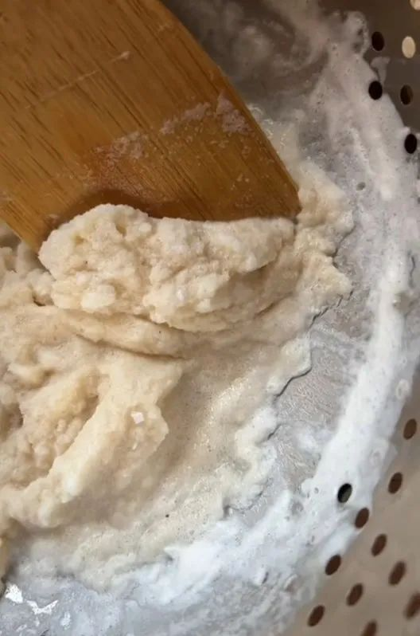
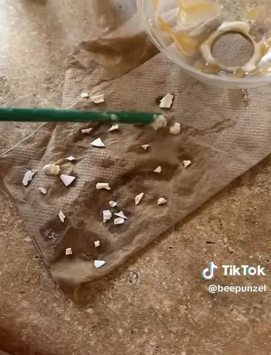
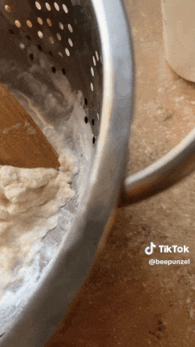
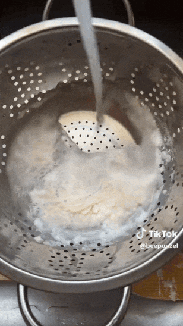

最近，一个美国妹子有关星巴克的吐槽在网上火了。这个妹子名叫Binx (@beepunzel)，她平常不怎么喝星巴克的，但那天不知怎么了特别想喝，所以她就顺便买了一杯焦糖星冰乐。
但饮料到手以后，她很快发现不对劲儿了，感觉这杯星冰乐的颜色质地都不太对。

于是她把饮料倒进滤网里，居然发现里面有几十块“锋利、坚硬的白色塑料”！“这些杂物霹雳巴拉的掉了出来，我简直不敢相信自己的眼睛！”Binx 说。
尽管它们很小，但如果不小心吞下去，这些锋利的塑料碎片可能会撕裂食道，甚至会导致感染和身体疼痛，后果真是不堪设想！

在录视频的过程中Binx 还在不断的把它们挑出来，实在是触目惊心啊：

手动挑完了以后她又用水冲了一下，看看还剩多少：

评论区的网友们也看呆了，无数人直接跟她说：一定要提告啊！！！
恭喜你，赚了笔大的！
但让Binx 百思不解的是，这些塑料是怎么进入饮品的啊？有本身就是做咖啡的网友也很疑惑：
网友们纷纷化身福尔摩斯：
它看起来像是桃汁/草莓泥的盖子之一
我之前也遇见过这种情况，这是果泥盖子之一。
我赌是他们把勺子给混合了！
人体确实含有微塑料，但是…研究发现，虽然我们绝对不可能直接吃塑料，但普通人群体内确实有微塑料（直径小于 5 毫米的碎片）。“十多年前，当我开始研究微塑料时，大约有 3,000 种 [塑料材料]，”微塑料科学家 Heather Leslie 告诉《科学新闻》。“现在有超过 9,600 种。这是一个巨大的数字，每种都有自己的化学成分和潜在毒性。”事实上，人们每天都会接触塑料。它是服装、化妆品、电子产品和大多数包装的一部分。
自然，在人的身体的所有部位都发现了微塑料，包括肺、母体和胎儿胎盘组织、乳汁和血液。联合国报告称，虽然目前还没有关于微塑料如何影响人体的确切信息，但研究表明，它可能导致内分泌紊乱、体重增加、胰岛素抵抗、生殖健康下降和癌症等健康风险。Well，问题是，日常接触进入人体的微塑料，和直接把塑料喝进肚子里是两个概念啊…
星巴克这回算是摊上大事儿了……